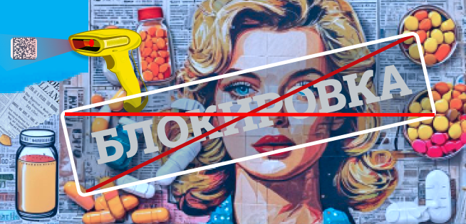
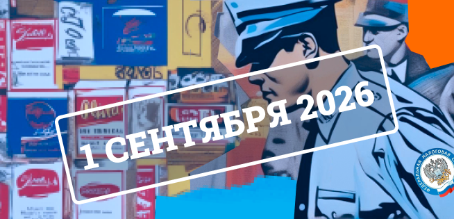
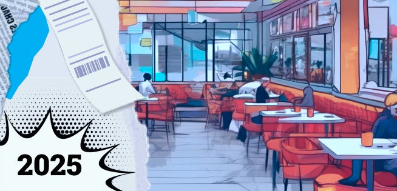
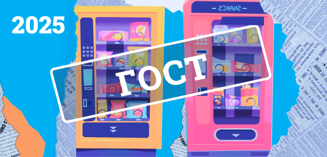
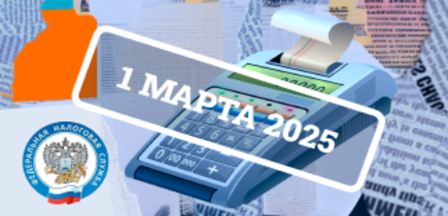
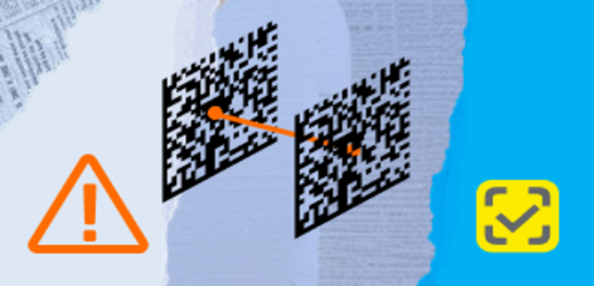
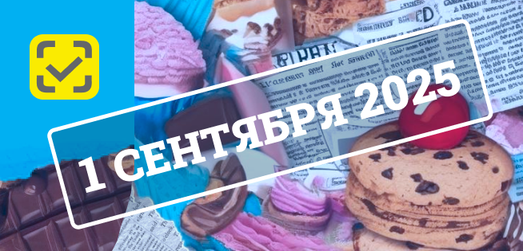

С начала лета аптеки и дистрибьюторы переходят на новый порядок работы с маркировкой
лекарственных препаратов. Теперь система не просто фиксирует код, но и проверяет его статус
перед продажей — если есть запрет, касса не пропустит товар.
С 1 сентября 2025 года вступают в силу новые правила классификации видов деятельности по ОКВЭД.
Теперь коды будут определяться автоматически — на основе данных из бухгалтерской и
статистической отчетности. Соответствующее постановление подписано Правительством РФ (№728 от
27.05.2025).

С марта 2026 года в России начнётся поэтапное лицензирование торговли табачной и
никотинсодержащей продукцией. До этого лицензии требовались только для производства и импорта.
Теперь под контроль попадает и продажа.
Налоговая готовит серьёзные изменения в правила контроля за использованием контрольно-кассовой
техники (ККТ). Теперь инспекторы смогут проводить проверку сразу после любого визита на точку —
даже если это был профилактический осмотр или просто «разведка». Оформлять решение заранее не
нужно, прокуратуру известят уже постфактум

Рестораторов снова ожидают изменения. С 1 марта 2025 года начнёт действовать новый порядок
расчёта в заведениях. Теперь нужно будет сначала распечатать кассовый чек и только потом брать
оплату у гостя.
Что это значит для бизнеса? Пересмотр схемы работы, новые правила обслуживания и, конечно,
последствия за нарушение. Об этом и поговорим в статье.

С 1 сентября 2025 года в России начнёт действовать первый в истории ГОСТ для автоматизированной
торговли — ГОСТ Р 72003-2025. Это значит, что у вендинга теперь будут свои официальные правила
игры: от кофе-аппаратов и автоматов с батончиками до массажных кресел и копировальных
терминалов.

Платили через СБП между ИП или компаниями — без чека, по-старинке? Теперь за это можно получить
штраф. С 1 марта 2025 года налоговая ужесточила правила: все расчёты через сервис быстрых
платежей требуют применения ККТ, даже если платёж проходит между юридическими лицами.

С 30 марта 2025 года «Честный Знак» массово блокирует личные кабинеты компаний, которые
использовали функцию «Перемаркировка» не по назначению. Под блокировку попадают те, кто оформлял
новые товары через перемаркировку — и теперь должен срочно доказать легальность продукции.
Представьте: вы отправляете счёт-фактуру клиенту, а через минуту получаете отказ. Документ не
принят, покупатель ждёт, продажи зависли. Именно так может начаться 1 апреля 2025 года, если не
подготовиться заранее.

С 1 сентября 2025 года меняется весь «сладкий» мир: производители, оптовики и розница не смогут
торговать кондитеркой без специальных кодов «Честный ЗНАК». Кому-то это покажется очередной
бюрократией, но игнорировать новые правила уже нельзя — товар без маркировки окажется под
запретом, а штрафы могут достигать сотен тысяч рублей. В этой статье разберём, что именно
попадёт под обязательную маркировку, почему нужно поторопиться и как организовать процесс
маркировки, чтобы спокойно продавать сладости дальше.